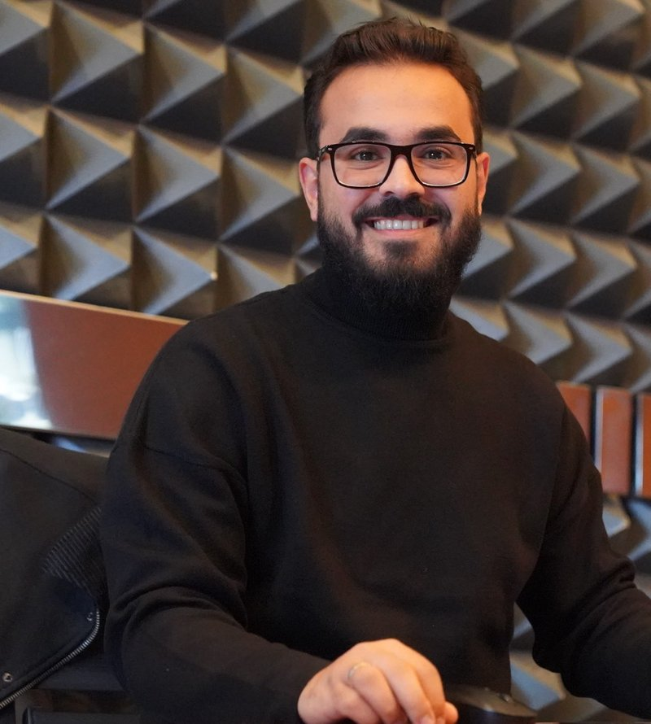

د/ محمد سامي
أخصائي تغذية علاجية · القاهرة
بشتغل مع ناس كتير جربوا رجيمات كتير ونزلوا وزن ورجّعوه. الفكرة اللي مبني عليها شغلي إن الوزن غالبًا نتيجة، مش المشكلة نفسها. السبب ممكن يبقى هرمونات، أو عادات أكل، أو علاقة مش صحية مع الأكل، وده اللي لازم يتفهم الأول.
- أخصائي تغذية علاجية سابقًا في مستشفى الجلاء العسكري
- شهادة علاج السمنة من الجمعية الأوروبية للتغذية الإكلينيكية
- شهادة تخطيط الوجبات من جامعة هارفارد
- شهادة SCOPE من الاتحاد العالمي للسمنة
- عضو الجمعية المصرية للتغذية العلاجية وEMASO
ليه عملت Newtrition؟
لقيت إن أغلب الناس بتدخل العيادة بعد سنين من المحاولات، ومحدش فهّمهم ليه وزنهم بيزيد أو بيرجع. عملت منهج H.E.A.L. عشان نبدأ من الفهم قبل الخطة: إيه اللي بيحصل في جسمك، وإيه عاداتك، وإيه علاقتك بالأكل.
ومن هنا جت أدوات Newtrition: تقييم وتطبيق مجانيين من غير حساب تبدأ بيهم النهارده، وكتب تشرحلك الطريق خطوة خطوة، ومتابعة شخصية لمن يحتاجها.
تقييم مجانيتفهم حالتك وأولوياتك في 8–10 دقايق.
تطبيق مجانيأرقامك وأكلك وتمرينك ومتابعتك في مكان واحد.
كتب4 كتب PDF بـ199 جنيه. شوفها
متابعة شخصيةكلمني على واتساب ونحدد الأنسب لك.